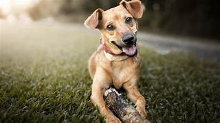

Historia de la Domesticación
Los perros han sido domesticados por el ser humano desde hace más de 15,000 añosSegún estudios arqueológicos y genéticos recientes.. Esta relación entre humanos y perros ha sido beneficiosa para ambas especies, brindándonos compañía, protección y asistencia en diversas tareas.
La domesticación de los perros comenzó con la convivencia y la selección natural. Con el tiempo, los humanos comenzaron a criar perros con características específicas para tareas como la caza, el pastoreo y la vigilancia.
Los perros descienden del lobo gris. Sin embargo, a lo largo de miles de años, los perros y los humanos han coevolucionado, adaptándose el uno al otro. El proceso de domesticación implicó la selección de lobos menos agresivos que se acercaban a los asentamientos humanos en busca de alimento. Estos lobos más dóciles y sociales eventualmente se convirtieron en los primeros perros domésticos.
En la antigüedad, los perros ya tenían roles importantes en las sociedades humanas. En Egipto, eran venerados y frecuentemente representados en el arte y la literatura. En Grecia y Roma, los perros eran utilizados para la caza, la guerra y como guardianes. Los nativos americanos también valoraban a los perros como compañeros de caza y guardianes de sus aldeas.
Con el tiempo, la crianza selectiva llevó a la creación de diversas razas con características específicas. Durante la Edad Media, por ejemplo, surgieron razas como el mastín, utilizado en la guerra y la caza de grandes presas. En épocas más recientes, el perro se ha convertido en un miembro esencial de muchas familias, ofreciendo compañía y amor incondicional.
El siglo XIX fue un período crucial para la creación de razas modernas. Los victorianos en particular estaban obsesionados con la cría de perros y la organización de exposiciones caninas. Esta era marcó el inicio del Kennel Club en Inglaterra y el American Kennel Club en Estados Unidos, organizaciones dedicadas a la estandarización y registro de razas.
Hoy en día, los perros desempeñan una variedad de roles en la sociedad moderna. Además de ser mascotas queridas, trabajan como perros guía para personas con discapacidades visuales, perros de terapia que brindan consuelo a los enfermos, perros de búsqueda y rescate, y perros policía que ayudan en la detección de sustancias y la captura de criminales.